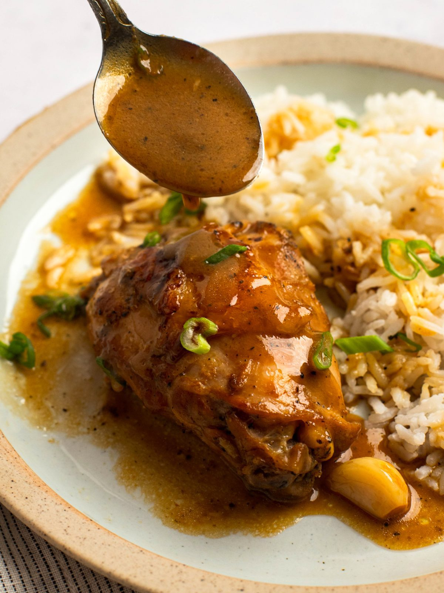

Chicken Adobo

Description
Classic famous Filipino Dishwhich features a chicken simmered with a sauce of vinegar, souy sauce, garlic, bay leaves, black pepper
Ingredients
- 2 tablespoons vegetable oil
- 1 (3 pound) chicken, cut into pieces
- 1 large onion, quartered and sliced
- 2 tablespoons minced garlic
- 2/3 cup low sodium soy sauce
- 1/3 cup white vinegar
- 1 tablespoon garlic powder
- 2 teaspoons black pepper
- 2 teaspoons black pepper
- 1 bay leaf
Steps
- In a large skillet put vegetable in medium-high heat. Cook chicken 2 to 3 minutes per side until golden brown. After that, place chicken in a plate and set aside
- Add in the skillet onion and garlic; cook until it is soft and brown. THis will be around 6 minutes
- Pour in the soy sauce, vinegar and season with garlic poweder, black pepper, and bay leaf.
- Put your chicken to the pan and increase the heat from medium to high and bring to a boil. Reduce heat back to medium-low then cover and simmer until the chicken is tender and cooked. THis will be around 35 minutes.